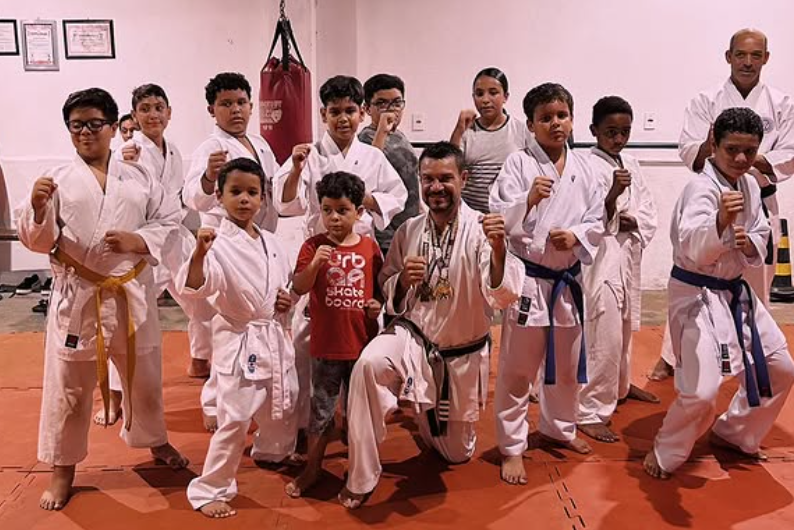
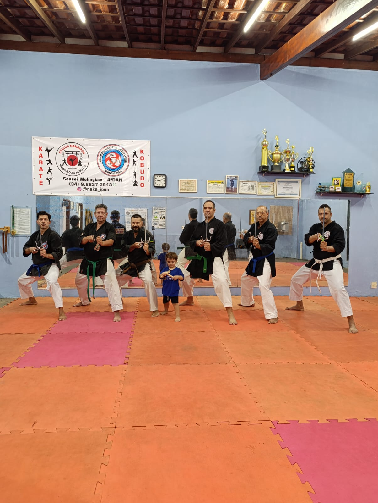
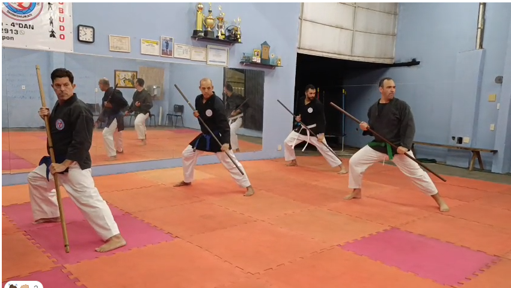
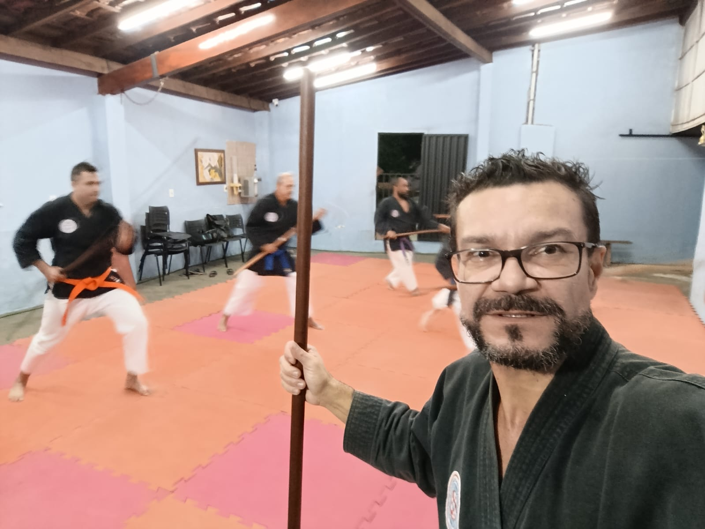
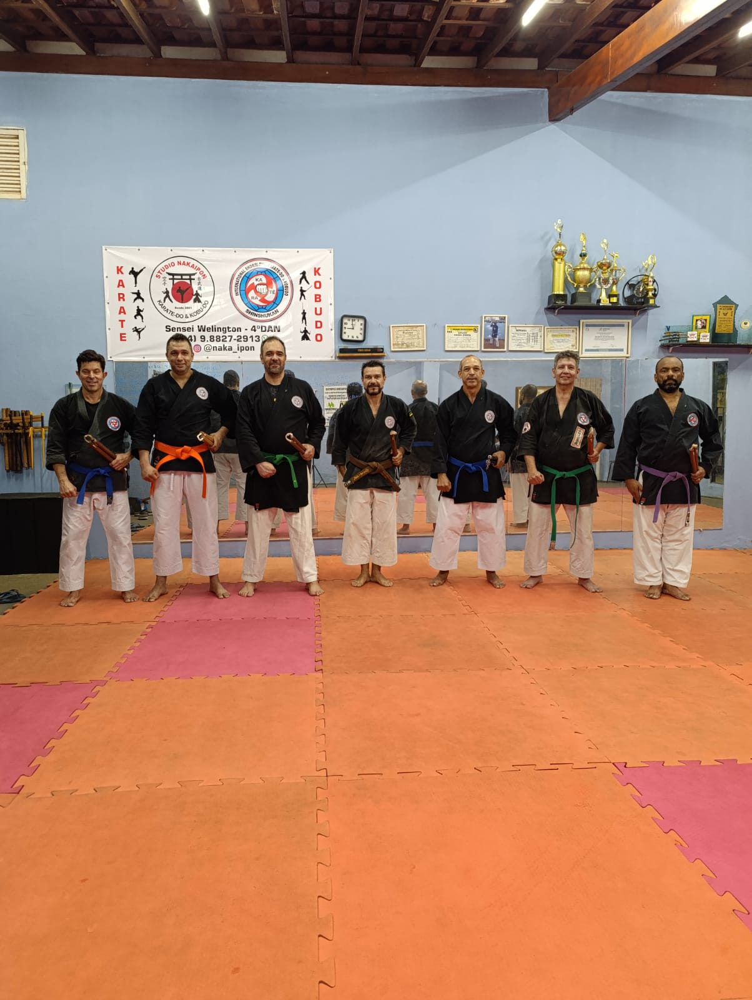
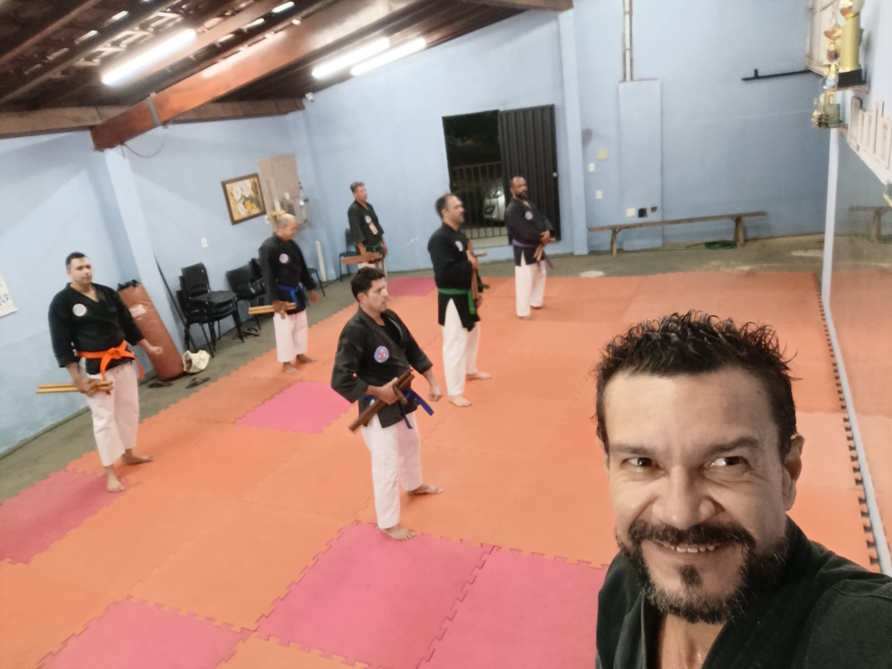
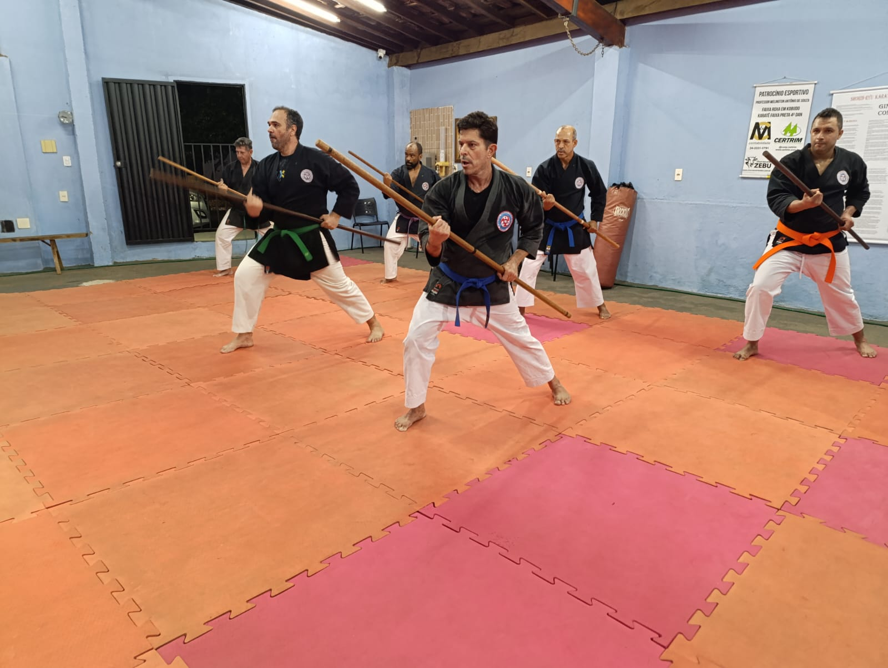
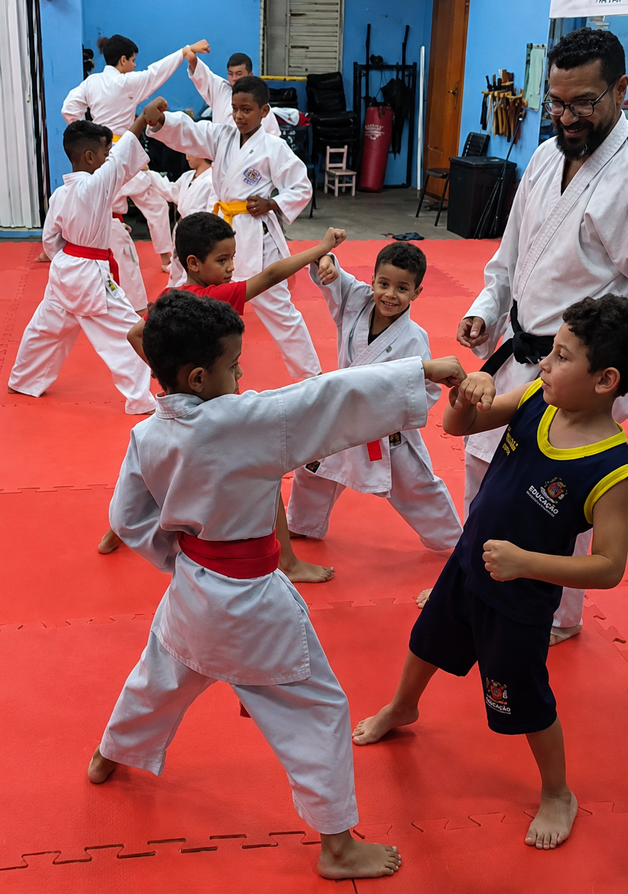
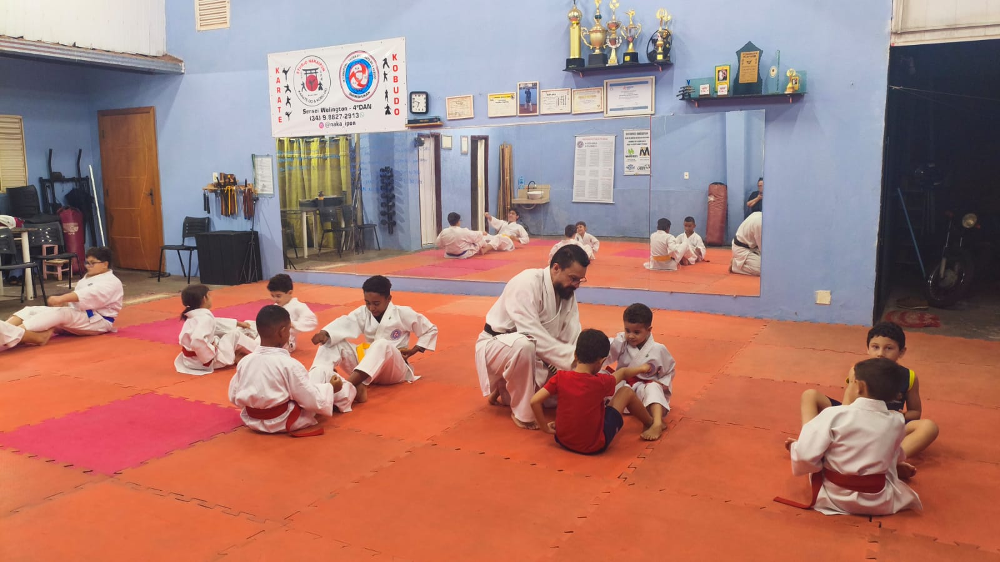
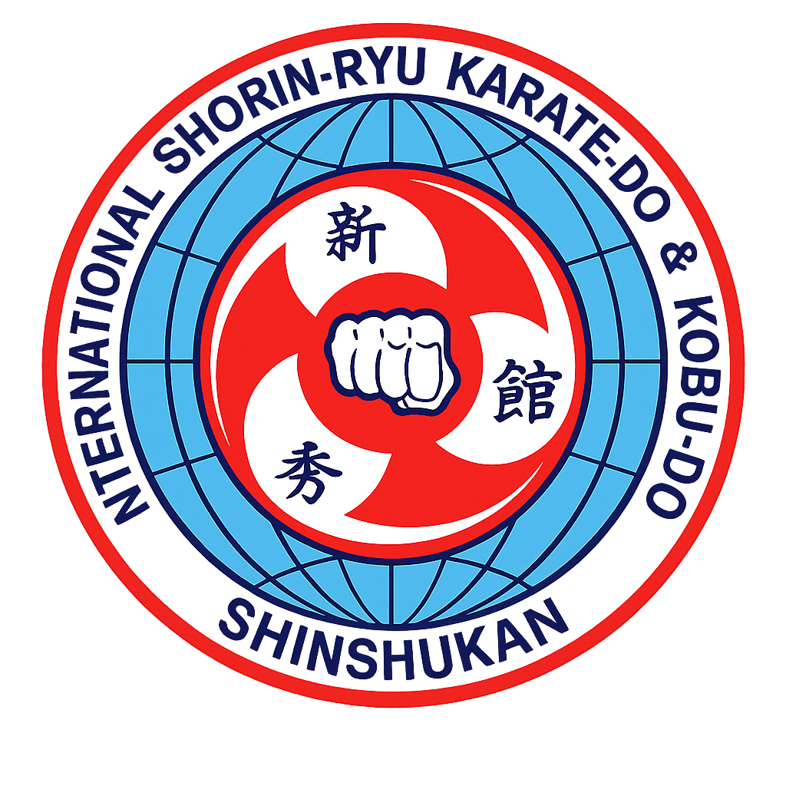

Galeria Studio Nakaipon
Registros do treino, da tradição e da evolução no dojo.
Fotos dos nossos treinos de Karatê, Kobudo. Professores, alunos e momentos que mostram o ambiente de prática do Studio Nakaipon em Uberaba.

Fotos
Momentos do Studio Nakaipon










